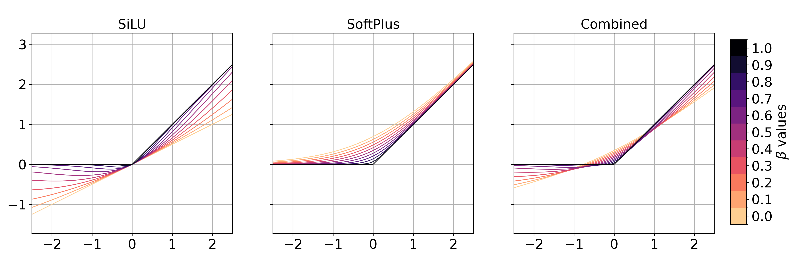

We begin by presenting the core activation that gives CT its expressive power—referred to as CT Unit (CTU):
\[
\varphi_{\beta,c}(\mathbf{x}) = c \cdot \sigma\left(\frac{\beta \mathbf{x}}{1 - \beta}\right) \cdot \mathbf{x} + (1 - c) \cdot \ln\left[1 + \exp\left(\frac{\mathbf{x}}{1 - \beta}\right)\right] \cdot (1 - \beta)
\]
where $\beta \in \left[0, 1\right]$ modulates the curvature, $c \in \left[0, 1\right]$ is the mixing coefficient, and $\sigma(\cdot)$ denotes the sigmoid function. This is essentially a convex combination of reparameterized SiLU and SoftPlus:
\[
\text{SiLU}(\mathbf{x}) = \sigma(\eta \mathbf{x}) \cdot \mathbf{x},\quad \eta = \frac{\beta}{1 - \beta};\qquad
\text{SoftPlus}(\mathbf{x}) = \frac{1}{\gamma} \cdot \ln\left[1 + \exp\left(\gamma \mathbf{x}\right)\right],\quad \gamma = \frac{1}{1 - \beta}
\]
These two activations are chosen because, based on the connection between deep networks and max-affine spline operators, each independently smooths the mapping of a ReLU-based network—transforming it from piecewise affine to fully nonlinear (details in the paper).
However, each activation alone shifts the unit’s output mean—negatively for SiLU and positively for SoftPlus.
When propagated through deep networks, this can alter decision boundaries or regression outputs, requiring retraining to correct.
By combining them, we cancel out these shifts while preserving curvature control, as shown below:

* The combined version sets $c = 0.5$.
In practice, we provide two implementations of CT differing in how CTU is applied:
-
CT (for model steering): Replaces all ReLUs in the network with CTUs using a fixed \( c = 0.5 \) and a shared \( \beta \in [0, 1] \). This version is highly parameter-efficient—introducing only a single hyperparameter—and does not require backpropagation, making it suitable as a lightweight steering method.
-
Trainable CT (for model finetuning): Also replaces all ReLUs with CTUs, but assigns each output neuron its own trainable pair \( (\beta, c) \), optimized via backpropagation. While it introduces additional parameters, the increase is modest compared to methods like LoRA and yields improved performance.